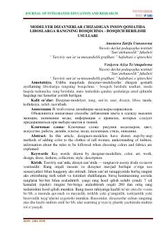

MDLiboslarga rang berish va zamonaviy dizayn usullari haqidagi ilmiy maqola.
Ushbu maqolada dizayner-modelyerlar tomonidan inson qomatida liboslarga rang berishning bosqichma-bosqich usullari, moda tushunchasi hamda rang va mato tanlash qoidalari yoritilgan. Shuningdek, milliy va zamonaviy liboslar kolleksiyasini yaratishda rangtasvir hamda kompozitsiya san'atining o'rni ko'rsatib berilgan.